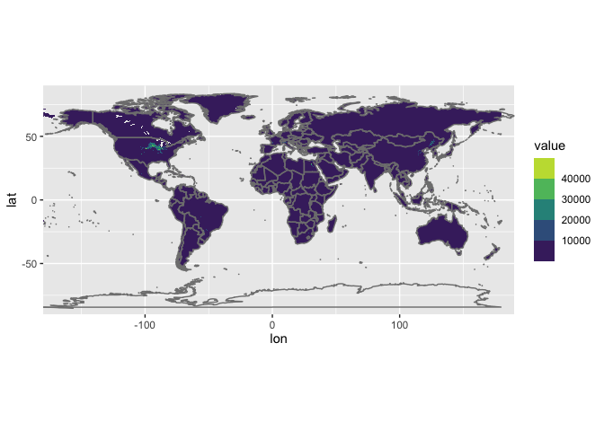
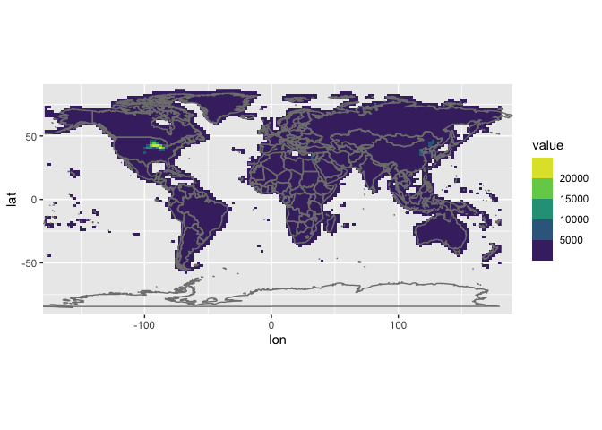

Regridding High-resolution Data
Often time, we use observations to validate model simulations. In addition to data quality, a big challenge is that we need to regrid the observations (or model results) to match with its counterpart.
Here we are using the raster package to perform a bilinear
interpolation on the 5-min-by-5-min data of global maize production.
# ====== loading libraries =====
library(ncdf4) # for reading nc files
library(raster) # for resampling
## Loading required package: sp
library(reshape2) # for reshaping files
library(tidyverse) # for tidying up data
## ── Attaching packages ─────────────────────────────────────────────────────── tidyverse 1.3.0 ──
## ✓ ggplot2 3.3.2 ✓ purrr 0.3.4
## ✓ tibble 3.0.3 ✓ dplyr 1.0.1
## ✓ tidyr 1.1.1 ✓ stringr 1.4.0
## ✓ readr 1.3.1 ✓ forcats 0.5.0
## ── Conflicts ────────────────────────────────────────────────────────── tidyverse_conflicts() ──
## x tidyr::extract() masks raster::extract()
## x dplyr::filter() masks stats::filter()
## x dplyr::lag() masks stats::lag()
## x dplyr::select() masks raster::select()
The dataset we use here is in NetCDF format and can be downloaded here.
# ====== reading data =====
nc.name = "maize_AreaYieldProduction.nc"
# open the NC file
nc = nc_open(filename = nc.name)
# extract coordinate and value of interest
lon.old = ncvar_get(nc = nc, varid = "longitude")
lat.old = ncvar_get(nc = nc, varid = "latitude")
old.matrix = ncvar_get(nc = nc, varid = "maizeData")[,,6] # <--- picking the 6th layer of data = production of maize. check out the .nc file for details
nc_close(nc)
rm(nc)
# Different data could have different methods to assign values to the matrix (increasing vs decreasing lon)
# I found that the best way to avoid dealing with that is to transform the matrix into a named matrix and then a dataframe, i.e. a list of (lon, lat, and value)
dimnames(old.matrix) = list(lon = lon.old, lat = lat.old)
old.df = melt(old.matrix)
head(old.df)
## lon lat value
## 1 -179.9583 89.95833 NaN
## 2 -179.8750 89.95833 NaN
## 3 -179.7917 89.95833 NaN
## 4 -179.7083 89.95833 NaN
## 5 -179.6250 89.95833 NaN
## 6 -179.5417 89.95833 NaN
Now we have a dataframe storing the values. We first convert the dataframe into a raster object so that we can apply the resample function in the raster package. Then, we define the solution of the target grid size (usually matching with model).
# ===== regridding =====
# make raster for the old gridded data
r = rasterFromXYZ(old.df)
# define resolution of the new grid
dlat.new = 1.9 # new delta lat
nlat.new = 96 # number of new lat
dlon.new = 2.5 # new delta lon
nlon.new = 144 # number of new lon
# make raster for the new grid
s = raster(nrow = nlat.new, ncol = nlon.new)
# use resample to regridded data
t = resample(r, s, method = "bilinear")
Finally, we can convert the raster t back to a matrix or a
dataframe for further processing.
# converting the regridded raster back to a named matrix
new.matrix = as.matrix(t)
dimnames(new.matrix) = list(lat = seq(90, -90, length.out = nlat.new),
lon = seq(-177.5, 180, by = dlon.new)) # <--- this setting is a bit tricky as lon of -180º = 180º
# or, further, into a dataframe
new.df = melt(new.matrix)
head(new.df)
## lat lon value
## 1 90.00000 -177.5 NA
## 2 88.10526 -177.5 NA
## 3 86.21053 -177.5 NA
## 4 84.31579 -177.5 NA
## 5 82.42105 -177.5 NA
## 6 80.52632 -177.5 NA
Finally, we can compare the original data and the regridded data visually.
This is what the original data looks like:
# plot the original data to check
old.df %>% ggplot(aes(x = lon, y = lat, fill = value)) +
geom_raster(interpolate = FALSE) + # adding heat maps
scale_fill_viridis_b(na.value = NA ) + # change color
borders() + # adding country borders
coord_equal(expand = FALSE) # keeping a nice aspect ratio
## Warning: Removed 7123007 rows containing missing values (geom_raster).

and the regridded ones:# then the regrided data
new.df %>% ggplot(aes(x = lon, y = lat, fill = value)) +
geom_raster(interpolate = FALSE) + # adding heat maps
scale_fill_viridis_b(na.value = NA ) + # change color
borders() + # adding country borders
coord_equal(expand = FALSE) # keeping a nice aspect ratio
## Warning: Removed 9010 rows containing missing values (geom_raster).

Done!
Ka Ming FUNG
Postdoctoral Associate
Earth System Scientist – studying the interactions between food security, air pollution, environmental health, and climate change